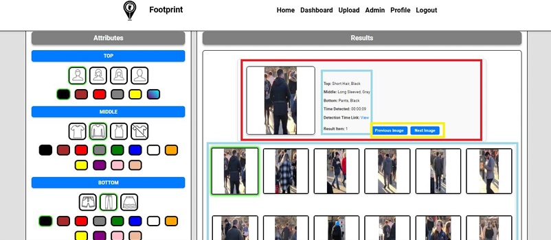
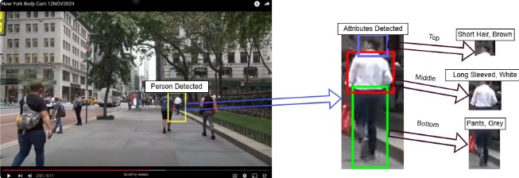
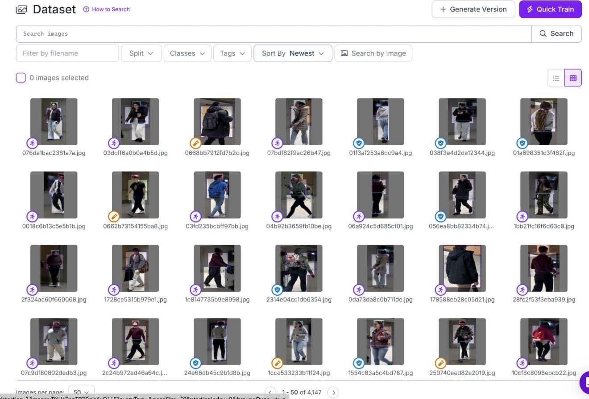
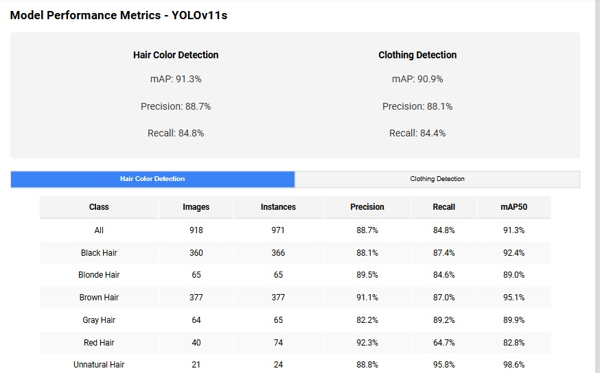
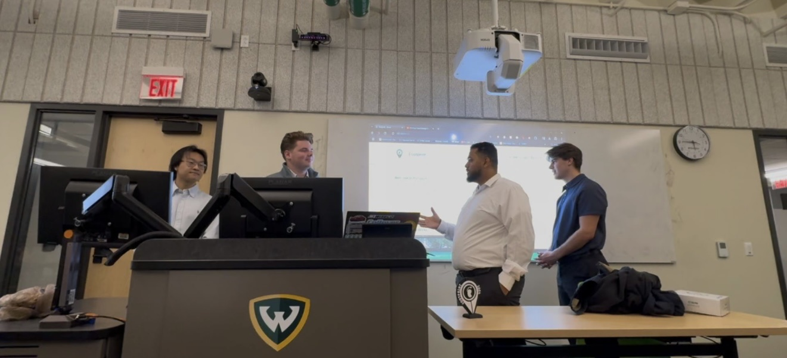

Computer Vision · Aug 2024 – Dec 2024
FOOTPRINT Detection
Full-stack web app for real-time missing person detection using YOLOv5 and OpenCV — attribute search, upload queues, and operator dashboards.
Challenge
Manual review of surveillance footage is slow when searching for missing persons across live or recorded video. Operators need searchable visual traits — hair, clothing type and color — not just raw detections.
Solution
Built a Django/Firebase backend for live queries and user data, Dockerized inference at configurable speeds, and a UI for YouTube/video upload, queue management, attribute filtering, and result review. Training dataset managed in Roboflow (4,000+ annotated images).
Performance
90%Less manual review time
91.3%Hair color mAP
90.9%Clothing mAP
4,147Dataset images
Screenshots




